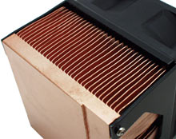
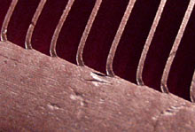

| pc |
| home page |
|
|  |
|  |
| net All other trademarks and copyrights on this site are owned by their respective owners. .Net HitechMODs Unique Hardware Tech-Angel BE Cooling Acid Hardware Gideon Tech Kingdom Komputers Serial Addiction Fast MHz Legion HW Artic Silver IP Konfig PC PowerZone PC-Critic Digital Domination Ice Hardware awars. Maybe it's just me, but I can never see the point of using anything but AS2 on any quality heatsink. Test System - Abit TH7-IIR, Coolermaster ATC201, IBM 75 Gig HD, Retail 1. |